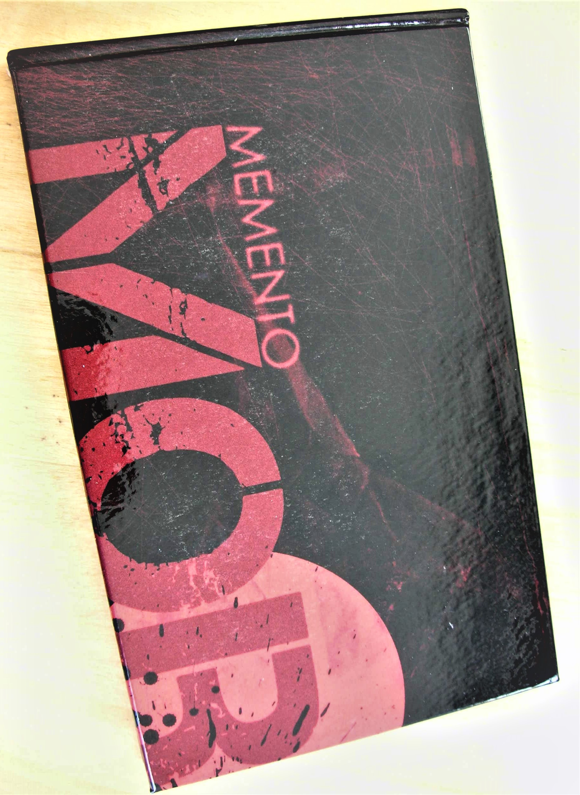

My Hobbies & Activites
Welcome in page 2. In this page you will be know about my passion, hobbies & activites.
Passion is energy. Feel the power that comes from focusing on what excites you.
Why I chose CSE?
I took this department because this is the only safest department according to the societ. I am a person who is loved coding. This field gave me the confidence that at least I will become a programmer or web developer. I know this sounds hilarious but on the serious note Computer Science & Engineering (CSE) provides you the best career opportunities. So, this was the only reason I took CSE.
Hobbies
No man is really happy or safe without a hobby. Hobbies are for people that don't like what they're doing.
Let's talk about my Hobbies.
My Favourite Book
Books are friends who never leave your side. I find this saying to be very true as books have always been there for me.
There are many book which are very wonderful.
One of the best books I ever read was "Memento Mori". It was written by Jonathan Nolan and published in the March 2001 edition of Esquire magazine.
Memento Mori

My Favourite Movies
I"m a huge movie fan. Everyday, I watch nearly 1-2 Movies. I;m kind of addicted in type of watching Movies.
There are houndred types of which are my Favourite. Top 5 Of my Favourite movies are Forest Gump, Shawshank Redemption, Kimi No Na Wa (Your Name),
MCU(Marvel Cinemetic Universe), How to train your dragon.
My Favourite Artists
Nowadays, Entertainment is improving day by day. There are lot's of artist around the world. For me there are only few artist whom I like.
Those artist are Shahrukh Khan, Robert Doweny jr, Benedict Cumberbatch, Cillian Murphy, Christian Bale.
My Favourite Sports
My Favourite Sports is both Football & Cricket. But Nowadays I prefer football over the cricket. In football I support Argentina National team & Barcelona Club.
My Favourite player is Leo Messi. He is the best player in the world.
My Favourite Pasttimes
Watching Movies & Tv Series. I watch movies when i was free , either in the background to relax, or right up front and loud to enjoy it if nothing else is going on. I even have it playing while I’m doing something one the phone, and I can actually concentrate better. This is just a recent development, though, which is weird. Also, I used to rarely listen to music, except for playing classical music on the piano and sometimes every so often listening to it.

Lastly
I want to clarify about something about me that I that type of person, if you ask me a question and I don’t know the answer. I’m will tell you that I don’t know. But I assure you that I know how to find answer. And I will find the answer.